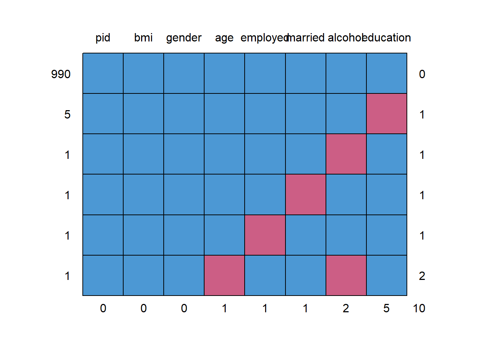
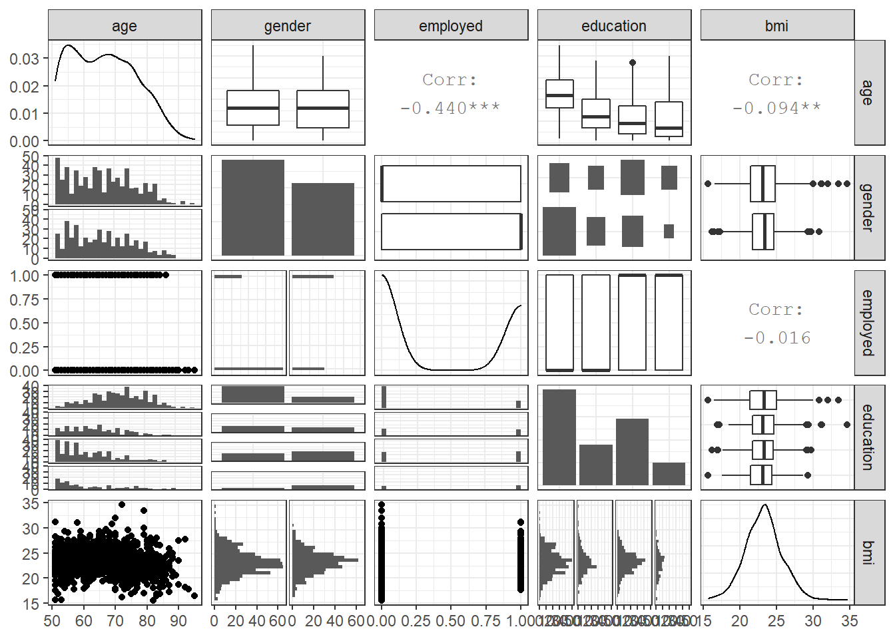
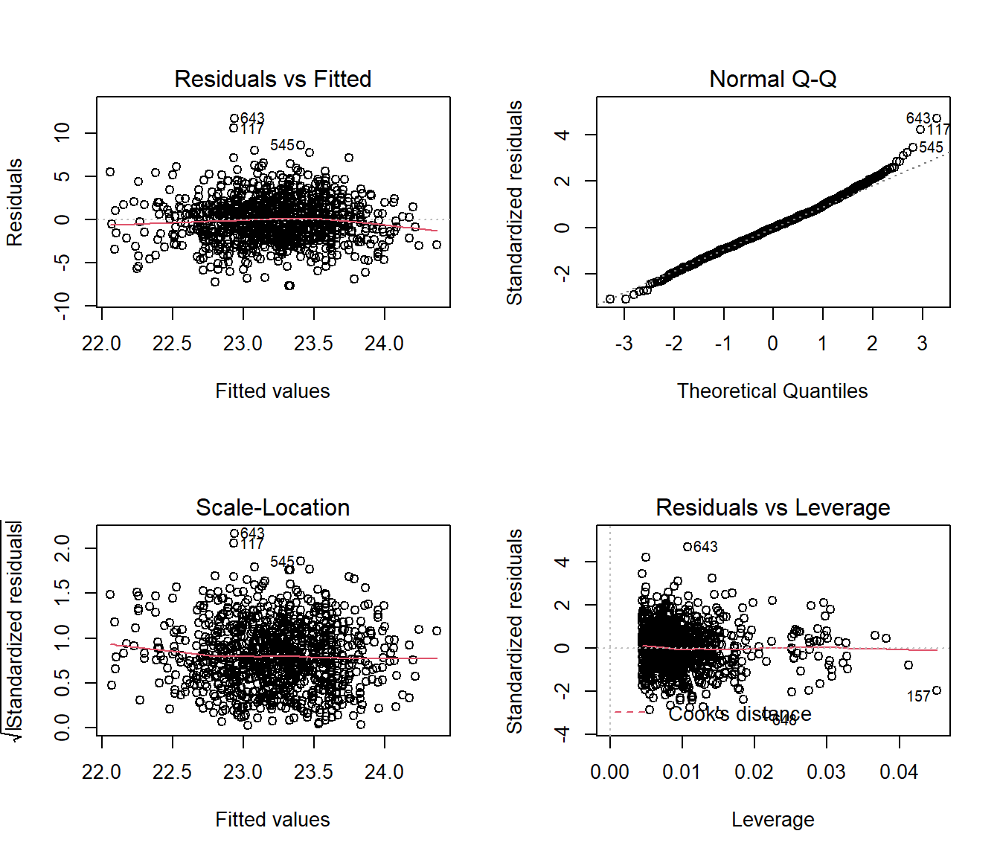

Chapter 33 BMI and Employment Study
This chapter was developed in 2018 and 2019. I didn’t bother to revise it to focus on the approaches we’ve taken this year in 431, again, in part to get this in your hands in a timely way, and in part to let you see some other options. Another nice feature is that it uses the mice package to do some multiple imputation. While we’ll have other approaches for this in 432, at least you’ll see one possibility.
33.1 The Data
A 2016 study published in BMJ Open looked at the differential relationship between employment status and body-mass index among middle-aged and elderly adults living in South Korea. Data from this study were available online thanks to the Dryad data package. The original data came from a nationally representative sample of 7228 participants in the Korean Longitudinal Study of Aging. I sampled these data, and did some data “rectangling” (wrangling) to build the emp_bmi.csv file on our web site.
The available data in emp_bmi describe 999 subjects, and included are 8 variables:
| Variable | Description | NA? |
|---|---|---|
pid |
subject identification number (categorical) | 0 |
bmi |
our outcome, quantitative, body-mass index | 0 |
age |
subject’s age (between 51 and 95) | 1 |
gender |
subject’s gender (male or female) | 0 |
employed |
employment status indicator (1/0) | 1 |
married |
marital status indicator (1/0) | 1 |
alcohol |
3-level factor | 2 |
education |
4-level factor | 5 |
emp_bmi
8 Variables 999 Observations
--------------------------------------------------------------------------------
pid
n missing distinct Info Mean Gmd .05 .10
999 0 999 1 31774 20178 3506 6961
.25 .50 .75 .90 .95
16671 31761 46902 54635 58433
lowest : 22 41 52 82 112, highest: 61471 61481 61532 61641 61691
--------------------------------------------------------------------------------
bmi
n missing distinct Info Mean Gmd .05 .10
999 0 373 1 23.24 2.808 19.21 20.13
.25 .50 .75 .90 .95
21.54 23.24 24.78 26.56 27.34
lowest : 15.60 15.63 16.22 16.44 16.53, highest: 31.11 31.24 32.05 33.50 34.67
--------------------------------------------------------------------------------
age
n missing distinct Info Mean Gmd .05 .10
998 1 43 0.999 66.29 11.56 52 53
.25 .50 .75 .90 .95
57 66 74 81 83
lowest : 51 52 53 54 55, highest: 89 90 92 93 95
--------------------------------------------------------------------------------
gender
n missing distinct
999 0 2
Value female male
Frequency 570 429
Proportion 0.571 0.429
--------------------------------------------------------------------------------
employed
n missing distinct Info Sum Mean Gmd
998 1 2 0.723 404 0.4048 0.4824
--------------------------------------------------------------------------------
married
n missing distinct Info Sum Mean Gmd
998 1 2 0.548 758 0.7595 0.3657
--------------------------------------------------------------------------------
alcohol
n missing distinct
997 2 3
Value alcohol dependent heavy drinker
Frequency 45 306
Proportion 0.045 0.307
Value normal drinker or non-drinker
Frequency 646
Proportion 0.648
--------------------------------------------------------------------------------
education
n missing distinct
994 5 4
Value 1 elem school grad or lower 2 middle school grad
Frequency 421 180
Proportion 0.424 0.181
Value 3 high school grad 4 college grad or higher
Frequency 292 101
Proportion 0.294 0.102
--------------------------------------------------------------------------------33.1.1 Specifying Outcome and Predictors for our Model
In the original study, a key goal was to understand the relationship between employment and body-mass index. Our goal in this example will be to create a model to predict bmi focusing on employment status (so our key predictor is employed) while accounting for the additional predictors age, gender, married, alcohol and education. A natural thing to do would be to consider interactions of these predictor variables (for example, does the relationship between bmi and employed change when comparing men to women?) but we’ll postpone that discussion until 432.
33.1.2 Dealing with Missing Predictor Values
Attaching package: 'mice'The following objects are masked from 'package:base':
cbind, rbind
pid bmi gender age employed married alcohol education
990 1 1 1 1 1 1 1 1 0
5 1 1 1 1 1 1 1 0 1
1 1 1 1 1 1 1 0 1 1
1 1 1 1 1 1 0 1 1 1
1 1 1 1 1 0 1 1 1 1
1 1 1 1 0 1 1 0 1 2
0 0 0 1 1 1 2 5 10We will eventually build a model to predict bmi using all of the other variables besides pid. So we’ll eventually have to account for the 9 people with missing values (one of whom has two missing values, as we see above.) What I’m going to do in this example is to first build a complete-case analysis on the 990 subjects without missing values and then, later, do multiple imputation to account for the 9 subjects with missing values (and their 10 actual missing values) sensibly.
I’ll put the “complete cases” data set of 990 subjects in emp_bmi_noNA.
# A tibble: 990 x 8
pid bmi age gender employed married alcohol education
<dbl> <dbl> <dbl> <chr> <dbl> <dbl> <chr> <chr>
1 22 20.8 58 male 1 1 heavy drinker 4 college grad o~
2 41 21.4 76 female 0 1 normal drinker o~ 1 elem school gr~
3 52 20.9 66 female 1 1 heavy drinker 1 elem school gr~
4 82 23.7 67 male 1 1 alcohol dependent 2 middle school ~
5 112 25.5 63 female 0 1 heavy drinker 1 elem school gr~
6 181 20.5 51 female 1 1 heavy drinker 3 high school gr~
7 182 25.3 51 male 1 1 alcohol dependent 3 high school gr~
8 411 20.8 66 female 1 1 normal drinker o~ 2 middle school ~
9 491 20.8 64 female 0 1 normal drinker o~ 3 high school gr~
10 531 24.3 84 female 0 0 normal drinker o~ 1 elem school gr~
# ... with 980 more rows pid bmi age gender employed married alcohol education
0 0 0 0 0 0 0 0 33.2 The “Kitchen Sink” Model
A “kitchen sink” model includes all available predictors.
ebmodel.1 <- lm(bmi ~ age + gender + employed + married +
alcohol + education, data = emp_bmi_noNA)
summary(ebmodel.1)
Call:
lm(formula = bmi ~ age + gender + employed + married + alcohol +
education, data = emp_bmi_noNA)
Residuals:
Min 1Q Median 3Q Max
-7.7033 -1.6057 -0.0494 1.4992 11.7303
Coefficients:
Estimate Std. Error t value Pr(>|t|)
(Intercept) 26.15391 0.88356 29.601 < 2e-16 ***
age -0.04260 0.01065 -3.998 6.86e-05 ***
gendermale 0.29811 0.20271 1.471 0.1417
employed -0.45761 0.19153 -2.389 0.0171 *
married 0.09438 0.21280 0.444 0.6575
alcoholheavy drinker 0.25317 0.40727 0.622 0.5343
alcoholnormal drinker or non-drinker 0.14121 0.40766 0.346 0.7291
education2 middle school grad -0.28862 0.24020 -1.202 0.2298
education3 high school grad -0.50123 0.22192 -2.259 0.0241 *
education4 college grad or higher -0.79862 0.31068 -2.571 0.0103 *
---
Signif. codes: 0 '***' 0.001 '**' 0.01 '*' 0.05 '.' 0.1 ' ' 1
Residual standard error: 2.513 on 980 degrees of freedom
Multiple R-squared: 0.02251, Adjusted R-squared: 0.01353
F-statistic: 2.508 on 9 and 980 DF, p-value: 0.00771633.3 Using Categorical Variables (Factors) as Predictors
We have six predictors here, and five of them are categorical. Note that R recognizes each kind of variable in this case and models them appropriately. Let’s look at the coefficients of our model.
33.3.1 gender: A binary variable represented by letters
The gender variable contains the two categories: male and female, and R recognizes this as a factor. When building a regression model with such a variable, R assigns the first of the two levels of the factor to the baseline, and includes in the model an indicator variable for the second level. By default, R assigns each factor a level order alphabetically.
So, in this case, we have:
[1] FALSENULLAs you see in the model, the gender information is captured by the indicator variable gendermale, which is 1 when gender = male and 0 otherwise.
So, when our model includes:
Coefficients: Estimate Std. Error t value Pr(>|t|)
gendermale 0.29811 0.20271 1.471 0.1417 this means that a male subject is predicted to have an outcome that is 0.29811 points higher than a female subject, if they have the same values of all of the other predictors.
Note that if we wanted to switch the levels so that “male” came first (and so that R would use “male” as the baseline category and “female” as the 1 value in an indicator), we could do so with the forcats package and the fct_relevel command. Building a model with this version of gender will simply reverse the sign of our indicator variable, but not change any of the other output.
emp_bmi_noNA$gender.2 <- fct_relevel(emp_bmi_noNA$gender, "male", "female")
revised.model <- lm(bmi ~ age + gender.2 + employed + married +
alcohol + education, data = emp_bmi_noNA)
summary(revised.model)
Call:
lm(formula = bmi ~ age + gender.2 + employed + married + alcohol +
education, data = emp_bmi_noNA)
Residuals:
Min 1Q Median 3Q Max
-7.7033 -1.6057 -0.0494 1.4992 11.7303
Coefficients:
Estimate Std. Error t value Pr(>|t|)
(Intercept) 26.45202 0.94648 27.948 < 2e-16 ***
age -0.04260 0.01065 -3.998 6.86e-05 ***
gender.2female -0.29811 0.20271 -1.471 0.1417
employed -0.45761 0.19153 -2.389 0.0171 *
married 0.09438 0.21280 0.444 0.6575
alcoholheavy drinker 0.25317 0.40727 0.622 0.5343
alcoholnormal drinker or non-drinker 0.14121 0.40766 0.346 0.7291
education2 middle school grad -0.28862 0.24020 -1.202 0.2298
education3 high school grad -0.50123 0.22192 -2.259 0.0241 *
education4 college grad or higher -0.79862 0.31068 -2.571 0.0103 *
---
Signif. codes: 0 '***' 0.001 '**' 0.01 '*' 0.05 '.' 0.1 ' ' 1
Residual standard error: 2.513 on 980 degrees of freedom
Multiple R-squared: 0.02251, Adjusted R-squared: 0.01353
F-statistic: 2.508 on 9 and 980 DF, p-value: 0.007716Note that the two categories here need to be both mutually exclusive (a subject cannot be in more than one category) and collectively exhaustive (all subjects must fit into this set of categories) in order to work properly as a regression predictor.
33.3.2 employed: A binary variable represented a 1/0 indicator
The employed and married variables are each described using an indicator variable, which is 1 if the condition of interest holds and 0 if it does not. R doesn’t recognize this as a factor, but rather as a quantitative variable. However, this is no problem for modeling, where we just need to remember that if employed = 1, the subject is employed, and if employed = 0, the subject is not employed, to interpret the results. The same approach is used for married.
Coefficients: Estimate Std. Error t value Pr(>|t|)
employed -0.45761 0.19153 -2.389 0.0171 *
married 0.09438 0.21280 0.444 0.6575 So, in our model, if subject A is employed, they are expected to have an outcome that is 0.46 points lower (-0.46 points higher) than subject B who is not employed but otherwise identical to subject A.
Similarly, if subject X is married, and subject Y is unmarried, but they otherwise have the same values of all predictors, then our model will predict a bmi for X that is 0.094 points higher than for Y.
33.3.3 alcohol: A three-category variable coded by names
Our alcohol information divides subjects into three categories, which are:
- normal drinker or non-drinker
- heavy drinker
- alcohol dependent
R builds a model using \(k-1\) predictors to describe a variable with \(k\) levels. As mentioned previously, R selects a baseline category when confronted with a factor variable, and it always selects the first level as the baseline. The levels are sorted alphabetically, unless we tell R to sort them some other way. So, we have
Coefficients: Estimate Std. Error t value Pr(>|t|)
alcoholheavy drinker 0.25317 0.40727 0.622 0.5343
alcoholnormal drinker or non-drinker 0.14121 0.40766 0.346 0.7291 How do we interpret this?
- Suppose subject A is alcohol dependent, B is a heavy drinker and C is a normal drinker or non-drinker, but subjects A-C have the same values of all other predictors.
- Our model predicts that B would have a BMI that is 0.25 points higher than A.
- Our model predicts that C would have a BMI that is 0.14 points higher than A.
A good way to think about this…
| Subject | Status | alcoholheavy drinker | alcoholnormal drinker or non-drinker |
|---|---|---|---|
| A | alcohol dependent | 0 | 0 |
| B | heavy drinker | 1 | 0 |
| C | normal drinker or non-drinker | 0 | 1 |
and so, with two variables, we cover each of these three possible alcohol levels.
When we have an ordered variable like this one, we usually want the baseline category to be at either end of the scale (either the highest or the lowest, but not something in the middle.) Another good idea in many settings is to use as the baseline category the most common category. Here, the baseline R chose was “alcohol dependent” which is the least common category, so I might want to use the fct_relevel function again to force R to choose, say, normal drinker/non-drinker as the baseline category.
emp_bmi_noNA$alcohol.2 <- fct_relevel(emp_bmi_noNA$alcohol,
"normal drinker or non-drinker", "heavy drinker")
revised.model.2 <- lm(bmi ~ age + gender + employed + married +
alcohol.2 + education, data = emp_bmi_noNA)
summary(revised.model.2)
Call:
lm(formula = bmi ~ age + gender + employed + married + alcohol.2 +
education, data = emp_bmi_noNA)
Residuals:
Min 1Q Median 3Q Max
-7.7033 -1.6057 -0.0494 1.4992 11.7303
Coefficients:
Estimate Std. Error t value Pr(>|t|)
(Intercept) 26.29512 0.82860 31.734 < 2e-16 ***
age -0.04260 0.01065 -3.998 6.86e-05 ***
gendermale 0.29811 0.20271 1.471 0.1417
employed -0.45761 0.19153 -2.389 0.0171 *
married 0.09438 0.21280 0.444 0.6575
alcohol.2heavy drinker 0.11196 0.19647 0.570 0.5689
alcohol.2alcohol dependent -0.14121 0.40766 -0.346 0.7291
education2 middle school grad -0.28862 0.24020 -1.202 0.2298
education3 high school grad -0.50123 0.22192 -2.259 0.0241 *
education4 college grad or higher -0.79862 0.31068 -2.571 0.0103 *
---
Signif. codes: 0 '***' 0.001 '**' 0.01 '*' 0.05 '.' 0.1 ' ' 1
Residual standard error: 2.513 on 980 degrees of freedom
Multiple R-squared: 0.02251, Adjusted R-squared: 0.01353
F-statistic: 2.508 on 9 and 980 DF, p-value: 0.007716How do we interpret this revised model?
- Again, subject A is alcohol dependent, B is a heavy drinker and C is a normal drinker or non-drinker, but subjects A-C have the same values of all other predictors.
- Our model predicts that B would have a BMI that is 0.11 points higher than C.
- Our model predicts that A would have a BMI that is 0.14 points lower than C.
So, those are the same conclusions, just rephrased.
33.3.4 t tests and multi-categorical variables
The usual “last predictor in” t test works perfectly for binary factors, but suppose we have a factor like alcohol which is represented by two different indicator variables. If we want to know whether the alcohol information, as a group, adds statistically significant value to the model that includes all of the other predictors, then our best strategy is to compare two models - one with the alcohol information, and one without.
model.with.a <- lm(bmi ~ age + gender + alcohol + employed + married + education,
data = emp_bmi_noNA)
model.no.a <- lm(bmi ~ age + gender + employed + married + education,
data = emp_bmi_noNA)
anova(model.with.a, model.no.a)Analysis of Variance Table
Model 1: bmi ~ age + gender + alcohol + employed + married + education
Model 2: bmi ~ age + gender + employed + married + education
Res.Df RSS Df Sum of Sq F Pr(>F)
1 980 6189.9
2 982 6193.6 -2 -3.6288 0.2873 0.7504The p value for both of the indicator variables associated with alcohol combined is 0.75, according to an ANOVA F test with 2 degrees of freedom.
Note that we can get the same information from an ANOVA table of the larger model if we add the alcohol predictor to the model last.
Analysis of Variance Table
Response: bmi
Df Sum Sq Mean Sq F value Pr(>F)
age 1 55.5 55.510 8.7884 0.003105 **
gender 1 0.4 0.369 0.0585 0.809000
employed 1 30.7 30.733 4.8657 0.027626 *
married 1 0.4 0.374 0.0592 0.807746
education 3 51.9 17.311 2.7408 0.042202 *
alcohol 2 3.6 1.814 0.2873 0.750382
Residuals 980 6189.9 6.316
---
Signif. codes: 0 '***' 0.001 '**' 0.01 '*' 0.05 '.' 0.1 ' ' 1Again, we see p for the two alcohol indicators is 0.75.
33.3.5 education: A four-category variable coded by names
The education variable’s codes are a little better designed. By preceding the text with a number for each code, we force R to attend to the level order we want to see.
Coefficients: Estimate Std. Error t value Pr(>|t|)
education2 middle school grad -0.28862 0.24020 -1.202 0.2298
education3 high school grad -0.50123 0.22192 -2.259 0.0241 *
education4 college grad or higher -0.79862 0.31068 -2.571 0.0103 * Since we have four education levels, we need those three indicator variables.
education2 middle school gradis 1 if the subject is a middle school graduate, and 0 if they have some other statuseducation3 high school gradis 1 if the subject is a high school graduate, and 0 if they have some other statuseducation4 college grad or higheris 1 if the subject is a college graduate or has more education, and 0 if they have some other status.- So the subjects with only elementary school or lower education are represented by zeros in all three indicators.
Suppose we have four subjects now, with the same values of all other predictors, but different levels of education.
| Subject | Education | Estimated BMI |
|---|---|---|
| A | elementary school or less | A |
| B | middle school grad | A - 0.289 |
| C | high school grad | A - 0.501 |
| D | college grad | A - 0.799 |
Note that the four categories are mutually exclusive (a subject cannot be in more than one category) and collectively exhaustive (all subjects must fit into this set of categories.) As we have seen, this is a requirement of categorical variables in a regression analysis.
Let’s run the ANOVA test for the education information captured in those three indicator variables…
Analysis of Variance Table
Response: bmi
Df Sum Sq Mean Sq F value Pr(>F)
age 1 55.5 55.510 8.7884 0.003105 **
gender 1 0.4 0.369 0.0585 0.809000
employed 1 30.7 30.733 4.8657 0.027626 *
married 1 0.4 0.374 0.0592 0.807746
alcohol 2 3.5 1.750 0.2771 0.758055
education 3 52.1 17.354 2.7476 0.041820 *
Residuals 980 6189.9 6.316
---
Signif. codes: 0 '***' 0.001 '**' 0.01 '*' 0.05 '.' 0.1 ' ' 1So, as a group, the three indicator variables add statistically significant predictive value at the 5% significance level, since the F test for those three variables has p = 0.042
33.3.6 Interpreting the Kitchen Sink Model
So, again, here’s our model.
ebmodel.1 <- lm(bmi ~ age + gender + employed + married +
alcohol + education, data = emp_bmi_noNA)
ebmodel.1
Call:
lm(formula = bmi ~ age + gender + employed + married + alcohol +
education, data = emp_bmi_noNA)
Coefficients:
(Intercept) age
26.15391 -0.04260
gendermale employed
0.29811 -0.45761
married alcoholheavy drinker
0.09438 0.25317
alcoholnormal drinker or non-drinker education2 middle school grad
0.14121 -0.28862
education3 high school grad education4 college grad or higher
-0.50123 -0.79862 If we wanted to predict a BMI level for a new subject like the ones used in the development of this model, that prediction would be:
- 26.15
- minus 0.426 times the subject’s
age - plus 0.298 if the subject’s
genderwasmale - minus 0.458 if the subject’s employment status was
employed - plus 0.253 if the subject’s
alcoholclassification washeavy drinker - plus 0.141 if the subject’s
alcoholclassification wasnormal drinker or non-drinker - minus 0.289 if the subject’s
educationclassification was2 middle school grad - minus 0.501 if the subject’s
educationclassification was3 high school grad - minus 0.799 if the subject’s
educationclassification was4 college grad or higher
33.4 Scatterplot Matrix with Categorical Predictors
Let’s look at a scatterplot matrix of a few key predictors, with my favorite approach (at least for quantitative predictors)…

33.5 Residual Plots when we have Categorical Predictors
Here are the main residual plots from the kitchen sink model ebmodel.1 defined previously.

Sometimes, in small samples, the categorical variables will make the regression residuals line up in somewhat strange patterns. But in this case, there’s no real problem. The use of categorical variables also has some impact on leverage, as it’s hard for a subject to be a serious outlier in terms of a predictor if that predictor only has a few possible levels.
33.6 Stepwise Regression and Categorical Predictors
When R does backwards elimination for stepwise model selection, it makes decisions about each categorical variable as in/out across all of the indicator variables simultaneously, as you’d hope.
Start: AIC=1834.64
bmi ~ age + gender + employed + married + alcohol + education
Df Sum of Sq RSS AIC
- alcohol 2 3.629 6193.6 1831.2
- married 1 1.243 6191.2 1832.8
<none> 6189.9 1834.6
- gender 1 13.660 6203.6 1834.8
- education 3 52.063 6242.0 1836.9
- employed 1 36.057 6226.0 1838.4
- age 1 100.976 6290.9 1848.7
Step: AIC=1831.22
bmi ~ age + gender + employed + married + education
Df Sum of Sq RSS AIC
- married 1 1.026 6194.6 1829.4
<none> 6193.6 1831.2
- gender 1 19.071 6212.6 1832.3
- education 3 51.934 6245.5 1833.5
- employed 1 34.736 6228.3 1834.8
- age 1 108.599 6302.2 1846.4
Step: AIC=1829.39
bmi ~ age + gender + employed + education
Df Sum of Sq RSS AIC
<none> 6194.6 1829.4
- gender 1 22.169 6216.7 1830.9
- education 3 51.282 6245.9 1831.5
- employed 1 34.390 6229.0 1832.9
- age 1 125.431 6320.0 1847.2
Call:
lm(formula = bmi ~ age + gender + employed + education, data = emp_bmi_noNA)
Coefficients:
(Intercept) age
26.50206 -0.04459
gendermale employed
0.34057 -0.44571
education2 middle school grad education3 high school grad
-0.28787 -0.49772
education4 college grad or higher
-0.79037 Note that the stepwise approach first drops two degrees of freedom (two indicator variables) for alcohol and then drops the one degree of freedom for married before it settles on a model with age, gender, education and employed.
33.7 Pooling Results after Multiple Imputation
As mentioned earlier, having built a model using complete cases, we should probably investigate the impact of multiple imputation on the missing observations. We’ll fit 100 imputations using the emp_bmi data and then fit a pooled regression model across those imputations.
Warning: Number of logged events: 3Now, we’ll fit the pooled kitchen sink regression model to these imputed data sets and pool them.
model.empbmi.mi <- with(emp_bmi_mi, lm(bmi ~ age + gender + employed + married +
alcohol + education))
summary(pool(model.empbmi.mi)) term estimate std.error statistic
1 (Intercept) 26.15264235 0.88035377 29.7069693
2 age -0.04257649 0.01063883 -4.0019893
3 gendermale 0.29771567 0.20235080 1.4712849
4 employed -0.45683748 0.19109736 -2.3906007
5 married 0.09440409 0.21243805 0.4443841
6 alcoholheavy drinker 0.25287293 0.40270585 0.6279346
7 alcoholnormal drinker or non-drinker 0.14106527 0.40341787 0.3496753
8 education2 middle school grad -0.28857465 0.23994471 -1.2026714
9 education3 high school grad -0.50085137 0.22138465 -2.2623582
10 education4 college grad or higher -0.79834801 0.30947194 -2.5797104
df p.value
1 979.908 0.000000e+00
2 979.908 6.754702e-05
3 979.908 1.415351e-01
4 979.908 1.700880e-02
5 979.908 6.568630e-01
6 979.908 5.301931e-01
7 979.908 7.266575e-01
8 979.908 2.293940e-01
9 979.908 2.389357e-02
10 979.908 1.003300e-02OK. That’s it.